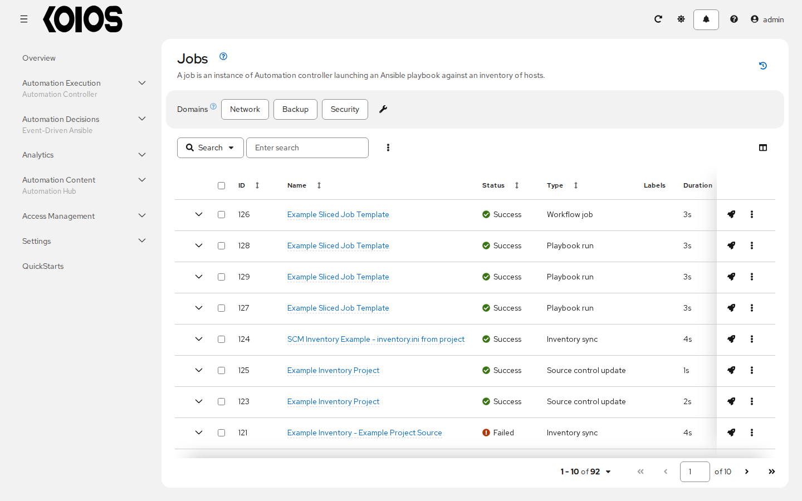
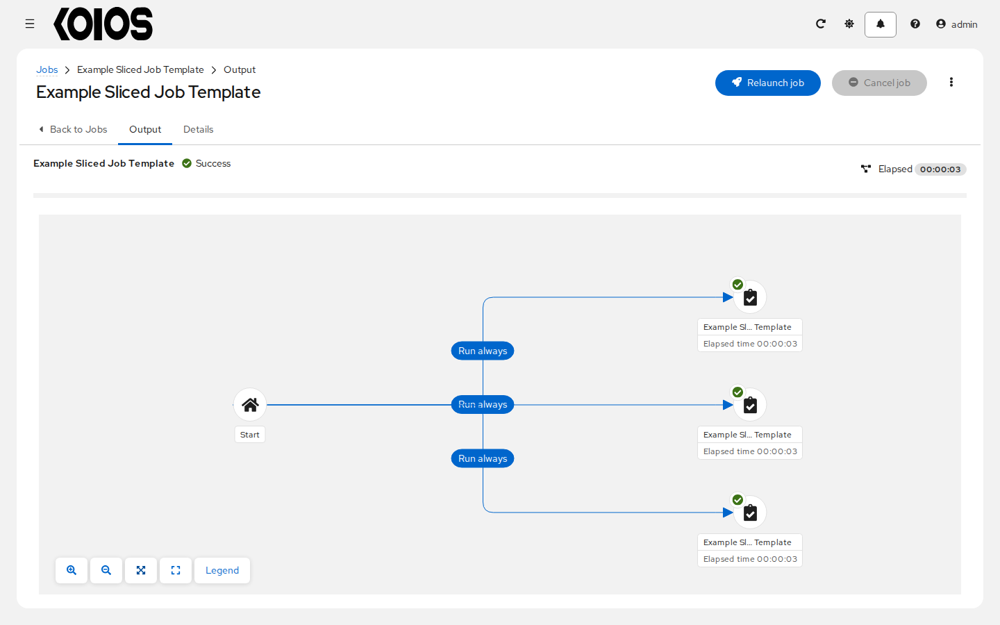

20. Job Slicing
A sliced job refers to the concept of a distributed job. Distributed jobs are used for running a job across a very large number of hosts, allowing you to run multiple ansible-playbooks, each on a subset of an inventory, that can be scheduled in parallel across a cluster.
By default, Ansible runs jobs from a single control instance. For jobs that do not require cross-host orchestration, job slicing takes advantage of automation controller’s ability to distribute work to multiple nodes in a cluster. Job slicing works by adding a Job Template field job_slice_count, which specifies the number of jobs into which to slice the Ansible run. When this number is greater than 1, automation controller will generate a workflow from a job template instead of a job. The effective number of slices is limited to the number of hosts of the inventory; when it is 1 (for example, an inventory with a single host), a normal job runs. The inventory will be distributed evenly amongst the slice jobs. The workflow job is then started, and proceeds as though it were a normal workflow. When launching a job, the API will return either a job resource (if job_slice_count = 1) or a workflow job resource. The corresponding User Interface will redirect to the appropriate screen to display the status of the run.
20.1. Job slice considerations
Consider the following when setting up job slices:
A sliced job creates a workflow job, and then that creates jobs.
A job slice consists of a job template, an inventory, and a slice count.
When executed, a sliced job splits each inventory into a number of “slice size” chunks. It then queues jobs of ansible-playbook runs on each chunk of the appropriate inventory. The inventory fed into ansible-playbook is a pared-down version of the original inventory that only contains the hosts in that particular slice. In the Jobs list, the sliced job appears as a Workflow job with the name of the job template, followed by one Playbook run for each slice:

These sliced jobs follow normal scheduling behavior (number of forks, queuing due to capacity, assignation to instance groups based on inventory mapping).
Note
Job slicing is intended to scale job executions horizontally. Enabling job slicing on a job template divides an inventory to be acted upon in the number of slices configured at launch time and then starts a job for each slice.
It is expected that the number of slices will be equal to or less than the number of controller nodes. Setting an extremely high number of job slices (e.g., thousands), while allowed, can cause performance degradation as the job scheduler is not designed to schedule simultaneously thousands of workflow nodes, which are what the sliced jobs become.
Sliced job templates with prompts and/or extra variables behave the same as standard job templates, applying all variables and limits to the entire set of slice jobs in the resulting workflow job. However, when passing a limit to a Sliced Job, if the limit causes slices to have no hosts assigned, those slices will fail, causing the overall job to fail.
A job slice job status of a distributed job is calculated in the same manner as workflow jobs; failure if there are any unhandled failures in its sub-jobs.
Warning
Any job that intends to orchestrate across hosts (rather than just applying changes to individual hosts) should not be configured as a slice job. Any job that does, may fail, and automation controller will not attempt to discover or account for playbooks that fail when run as slice jobs.
20.2. Job slice execution behavior
When jobs are sliced, they can run on any node and some may not run at the same time (insufficient capacity in the system, for example). The Output tab of the workflow job shows one node per slice with its status; click a node to open the output of that slice, and its Details tab shows its Job slice number (for example, 1/3).

By default, job templates are not normally configured to execute simultaneously (allow_simultaneous in the API, Concurrent jobs in the job template form). Slicing overrides this behavior and implies allow_simultaneous even if that setting is unchecked. See Job Templates for information on how to specify this, as well as the number of job slices on your job template configuration.
The Job Templates section provides additional detail on performing the following operations in the User Interface:
Launch workflow jobs with a job template that has a slice number greater than one
Cancel the whole workflow or individual jobs after launching a slice job template
Relaunch the whole workflow or individual jobs after slice jobs finish running
View the details about the workflow and slice jobs after a launching a job template
Search slice jobs specifically after you create them (see subsequent section, Search job slices)
20.3. Search job slices
To make it easier to find slice jobs, use the Search functionality to apply a search filter to:
job lists to show only slice jobs
job lists to show only parent workflow jobs of job slices
job templates lists to only show job templates that produce slice jobs
To show only slice jobs in job lists, as with most cases, you can filter either on the type (jobs here) or unified_jobs:
/api/controller/v2/jobs/?job_slice_count__gt=1
To show only parent workflow jobs of job slices:
/api/controller/v2/workflow_jobs/?job_template__isnull=false
To show only job templates that produce slice jobs:
/api/controller/v2/job_templates/?job_slice_count__gt=1